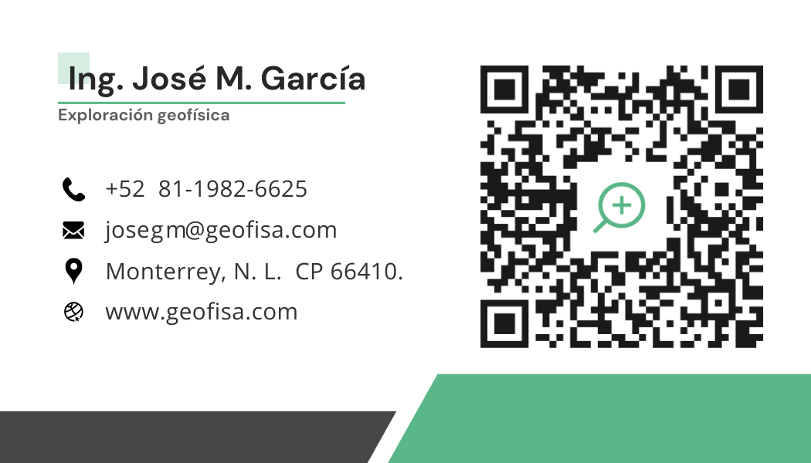

¿Quién soy?
Soy José María García Márquez, ingeniero geofísico con experiencia en procesamiento de datos sísmicos, análisis de GPR (más de 6 km de datos), sondeos eléctricos verticales (VES) y modelado geológico. He trabajado en minería, estudios arqueológicos y evaluación de recursos hídricos, combinando la ciencia y la tecnología para resolver retos complejos del subsuelo.
Domino Python y herramientas como simPEG, PyGIMLi y ResIPy para inversión y modelado geofísico, así como software especializado (GPRPy, ObsPy, QGIS, AutoCAD, LeapFrog). He desarrollado y contribuido a librerías de código abierto para el análisis e interpretación de datos geofísicos, como pypozo y hvsrlearn.
Ofrezco servicios de asesoría personalizada en proyectos de geofísica: desde la planeación y ejecución de campañas de campo, hasta el procesamiento, modelado e interpretación de datos. Si tienes un proyecto en mente, necesitas interpretación de datos, o buscas capacitación en software geofísico, confiarme tu proyecto es la mejor decisión.
¿Tienes dudas o necesitas orientación? ¡Agenda una asesoría conmigo! Escríbeme a josegm@geofisa.com y trabajemos juntos en tu próximo reto profesional.

Contacto
Correo: josegm@geofisa.com
Patreon
Apoya mi trabajo y accede a contenido exclusivo en Patreon. Con tu apoyo, puedo seguir desarrollando proyectos geofísicos y compartiendo conocimientos con la comunidad.
💳 Métodos de Pago
Realiza pagos de forma segura para servicios de consultoría, cursos o donaciones.